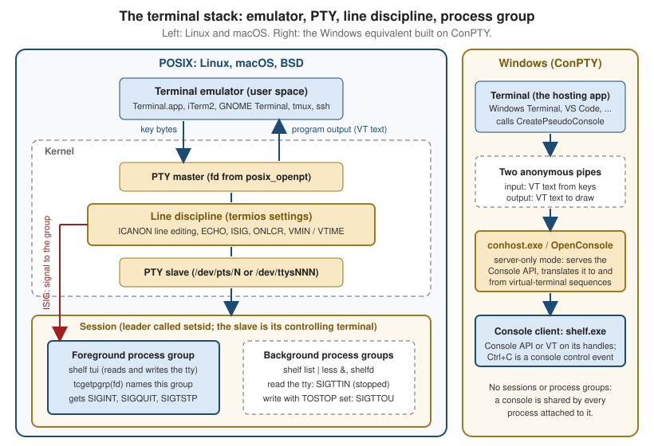

Terminals, TTYs & Pseudo-Terminals
|
This content was generated with the assistance of AI and should be verified against the official documentation before being relied on in production. |
Every interactive command-line program runs inside a stack that most programmers never look at: a terminal emulator that
draws characters and turns key presses into bytes, a kernel device that sits between that emulator and the program, and a
set of process-group rules that decide who may read the keyboard and who gets Ctrl-C. Almost every confusing terminal
behaviour has its cause in that stack: the prompt that needs Enter before it sees a key, the password that is echoed, the
shell that is left without echo after a crash, the program that is stopped by SIGTTIN when started with &, the
full-screen interface that does not redraw after the window is resized. This page explains the stack layer by layer, shows the
POSIX interfaces that control it (termios, pseudo-terminals, sessions, job control, window size) and the Windows
equivalents (the console host, Windows Terminal and ConPTY), and finishes with the rule that every terminal program must
follow: always restore the terminal state.
The page was written against these sources, current in October 2026:
-
POSIX.1-2024 (IEEE Std 1003.1-2024, Open Group Base Specifications Issue 8). Issue 8 added
tcgetwinsizeandtcsetwinsize,ptsname_r, theO_TTY_INITopen flag and theSIGWINCHsignal, and it renamed the pseudo-terminal halves from master and slave to manager and subsidiary. -
glibc 2.44 and the Linux man-pages (
termios(3),pty(7),credentials(7),signal(7)). -
Windows 10 version 1809 or later for ConPTY (
CreatePseudoConsole); the console documentation on Microsoft Learn, including the change toClosePseudoConsolein Windows 11 24H2.
The running scenario is the Bookshelf tool. shelf is the command-line client (a one-shot shelf list, an interactive
shelf tui catalogue browser) and shelfd is its background daemon. The design rules for such tools (when to prompt, how to
detect a terminal, colour and NO_COLOR, exit codes) are covered in the
TTY, Colour & Interactivity page and are not repeated here; this
page is about what happens underneath. The sibling pages
Escape Sequences & Terminal Capabilities,
POSIX Processes, Signals & I/O and
Windows Console & Processes go deeper on the topics this page only
introduces.
Every C example on this page was compiled with Apple clang 21 and run on macOS, inside a pseudo-terminal where a terminal was required, and the outputs shown are the real outputs. The behaviour described for Linux comes from the Linux man-pages and the POSIX specification, not from running the code on Linux. The Windows examples were not compiled while this page was written; they follow the Microsoft Learn documentation they link to.
Terminal emulator, shell and program
Three different things are usually called "the terminal". Keeping them apart explains most of what follows.
| Layer | What it is | What it does |
|---|---|---|
Terminal emulator |
A graphical (or remote) program: Terminal.app, iTerm2, GNOME Terminal, Windows Terminal, the VS Code panel, |
Draws a grid of character cells, turns key presses into bytes (for example |
Kernel TTY and line discipline |
A device pair in the kernel: a pseudo-terminal master and slave on Linux, macOS and the BSDs. |
Moves bytes between the emulator and the program. In between it optionally edits the line, echoes typed characters, translates carriage returns and newlines, and turns Ctrl-C, Ctrl-Z and Ctrl-Backslash into signals. |
Shell |
An ordinary program: |
Reads commands from the terminal, starts other programs, and manages jobs (process groups) so that the right program receives the keyboard. |
Program |
|
Reads bytes, writes bytes. It does not know which emulator it is talking to. |
The word TTY is historical: it comes from the teletypewriter, the physical device a UNIX system was once driven from. A
modern system has few real serial terminals but the kernel still exposes every terminal, real or virtual, through the same
interface, and isatty(fd) is still the question a program asks to learn whether a file descriptor is one of them. A
pseudo-terminal (PTY) is the kernel’s software-only terminal: the other end of the "wire" is another process, not a
keyboard and a screen. Every terminal emulator, every ssh session, every tmux pane and every CI log that captures colour
output is built on one.
The practical consequence is that a program never talks to a screen. It reads and writes a byte stream, and the bytes that
mean "move the cursor" or "make this text red" are interpreted by the emulator at the far end. That is why a full-screen
program must ask the emulator for its size and why the same shelf tui binary works unchanged in a local window, over
ssh and inside tmux.
The kernel TTY and its line discipline
Between the program and the emulator sits the line discipline, a layer of the kernel’s TTY driver that processes every
byte in both directions according to a termios structure attached to the terminal. The figure shows where it sits, with
the Windows arrangement on the right for comparison.

Following one key press through the stack makes the layers concrete. The diagram shows both the default (canonical) mode, where the line discipline edits the line and holds it until Enter, and the character-at-a-time mode a full-screen program uses.
Three details of the diagram matter in practice. First, echo is done by the line discipline, not by the program: the
terminal, not shelf, prints the characters of a typed line, which is why echo is switched off with termios when a
program wants to read a password. Second, output is processed too: with the default OPOST and ONLCR settings every
newline written by the program becomes carriage return plus newline on its way to the emulator (the real output of the
compiled examples below shows \r\n for that reason). Third, Ctrl-C is not a character the program reads: when ISIG is
set the line discipline consumes it and sends SIGINT to the foreground process group.
Canonical and non-canonical mode
The termios structure from <termios.h> holds the whole configuration of the line discipline. POSIX.1-2024
specifies it in chapter 11 (General Terminal Interface) of the Base Definitions; termios(3) on Linux documents the
Linux behaviour.
| Member | Controls |
|---|---|
|
Input processing: |
|
Output processing: |
|
Hardware line settings: |
|
Local modes: |
|
The special characters ( |
The most important flag is ICANON. In canonical mode (also called cooked mode, the default) the line discipline
collects input into lines. A read returns only after the user presses Enter (or Ctrl-D, the end-of-file character), and
until then the user can edit the line with Backspace, Ctrl-W (erase a word) and Ctrl-U (erase the line). That editing
happens in the kernel, with no help from the program, and is why a simple program can read a line with fgets and behave
sensibly. In non-canonical mode no editing happens and read returns as soon as the amount of data described by VMIN
and VTIME is available.
| Name | ICANON |
ISIG |
Used for |
|---|---|---|---|
Cooked (default) |
set |
set |
Line-oriented programs: shells at the prompt, |
Cbreak |
clear |
set |
One key at a time but Ctrl-C and Ctrl-Z still work: "press y to confirm", pagers, menus. |
Raw |
clear |
clear |
Full control: Ctrl-C arrives as the byte 0x03. Full-screen TUIs, editors, terminal-in-terminal programs. Also input and output processing off. |
"Cbreak" and "raw" are not termios terms; they are the traditional names of two useful combinations, and a library’s
raw mode (crossterm’s enable_raw_mode, Go’s x/term.MakeRaw, ncurses' raw() and cbreak()) is one of these two. The
VMIN and VTIME members decide when a non-canonical read returns.
VMIN |
VTIME |
Behaviour of read |
|---|---|---|
0 |
0 |
Returns immediately with whatever is available, possibly nothing (polling). |
greater than 0 |
0 |
Blocks until at least |
0 |
greater than 0 |
Blocks for up to |
greater than 0 |
greater than 0 |
An inter-byte timer: after the first byte arrives, |
Settings are read with tcgetattr(fd, &t) and applied with tcsetattr(fd, when, &t). The when argument selects the
moment of the change: TCSANOW immediately, TCSADRAIN after all pending output has been transmitted (use this when
changing output parameters), and TCSAFLUSH after the output has drained and discarding unread input. tcsetattr returns
success if any of the requested changes was made, so a careful program calls tcgetattr again and compares when it
depends on a specific setting. The non-standard cfmakeraw(&t) (BSD origin, available on Linux and macOS, not in
POSIX.1-2024) clears the input, output, echo, canonical and signal flags and selects 8-bit characters in one call, but it
does not set VMIN and VTIME, so set them explicitly.
Special characters
The line discipline recognises a few control characters, each one configurable through c_cc. The defaults below are the
conventional ones.
| Key | c_cc index |
Needs | Effect |
|---|---|---|---|
Ctrl-C |
|
|
|
Ctrl-Backslash |
|
|
|
Ctrl-Z |
|
|
|
Ctrl-D |
|
|
Makes a pending |
Backspace (0x7F, or Ctrl-H) |
|
|
Erases the previous character. |
Ctrl-U |
|
|
Erases the whole line. |
Ctrl-W |
|
|
Erases the previous word (an extension in most implementations). |
Ctrl-V |
|
|
Takes the next character literally, so a user can type a raw escape. |
Ctrl-S and Ctrl-Q |
|
|
Software flow control: Ctrl-S freezes the output until Ctrl-Q, a classic cause of "my terminal hangs". |
A program that wants to treat Ctrl-C as an ordinary key must clear ISIG (and usually IXON, IEXTEN and ICRNL too, so
that Ctrl-S, Ctrl-V and Ctrl-M arrive unchanged). A program that keeps ISIG set must be ready for SIGINT,
SIGTSTP and SIGQUIT while the terminal is in the modified state, which is the subject of the next example.
Reading one key, and always restoring the terminal
The rule that governs every termios program is simple: the terminal belongs to the user’s shell, not to your program,
so whatever state you change you must put back on every way out. A program that dies in raw mode leaves the user’s shell
without echo and without line editing, and the user has to type reset blind. The example reads a single key for a
shelf return confirmation in cbreak mode and restores the terminal on normal exit, on exit() and on the fatal
signals it can catch.
// shelf-pick.c: ask "Return Dune? [y/n]" and read one key without Enter.
#include <errno.h>
#include <signal.h>
#include <stdio.h>
#include <stdlib.h>
#include <termios.h>
#include <unistd.h>
static struct termios saved;
static int have_saved = 0;
static void restore(void) {
if (have_saved) {
tcsetattr(STDIN_FILENO, TCSAFLUSH, &saved);
have_saved = 0;
}
}
static void on_fatal(int sig) {
restore(); /* tcsetattr is async-signal-safe */
signal(sig, SIG_DFL); /* then die with the original signal */
raise(sig);
}
static int enter_cbreak(void) {
if (!isatty(STDIN_FILENO)) {
errno = ENOTTY;
return -1;
}
if (tcgetattr(STDIN_FILENO, &saved) == -1) return -1;
have_saved = 1;
atexit(restore);
struct sigaction sa = { .sa_handler = on_fatal };
sigemptyset(&sa.sa_mask);
sigaction(SIGINT, &sa, NULL);
sigaction(SIGTERM, &sa, NULL);
struct termios t = saved;
t.c_lflag &= ~(ICANON | ECHO); /* cbreak: keep ISIG so Ctrl-C still works */
t.c_cc[VMIN] = 1; /* block until one byte ... */
t.c_cc[VTIME] = 0; /* ... with no timeout */
return tcsetattr(STDIN_FILENO, TCSAFLUSH, &t);
}
int main(void) {
if (enter_cbreak() == -1) {
perror("shelf: stdin is not a terminal");
return 1;
}
fputs("Return \"Dune\"? [y/n] ", stdout);
fflush(stdout);
unsigned char c;
if (read(STDIN_FILENO, &c, 1) != 1) return 1;
printf("%c\n", c);
return c == 'y' ? 0 : 2;
}The program compiles with clang -Wall -Wextra without warnings. Run with a pipe instead of a terminal it refuses
cleanly, and run inside a pseudo-terminal it behaves as designed:
$ echo y | ./shelf-pick
shelf: stdin is not a terminal: Inappropriate ioctl for device
$ echo $?
1Driven through a pseudo-terminal with the byte y written to the master, the program printed
Return "Dune"? [y/n] y followed by a carriage return and newline and exited with status 0. Driven with the byte 0x03
(Ctrl-C), it restored the terminal in on_fatal and then terminated by SIGINT, so the parent saw the same exit status as
for an unhandled interrupt: the signal handler re-raises with the default disposition instead of calling exit.
The design points of that example are the checklist for every terminal-modifying program:
-
Check
isattyfirst and refuse, or fall back to a non-interactive path, when the descriptor is not a terminal. -
Save the original settings before the first change, and restore those settings, not a guess at the defaults.
-
Restore on every exit path: normal return,
exit()(viaatexit), and the signals you can catch (SIGINT,SIGTERM,SIGHUP,SIGQUIT).SIGKILLcannot be caught, so a program killed that way cannot restore anything. -
Keep the handlers minimal and async-signal-safe:
tcsetattr,signalandraisemay be called from a handler,printfandmallocmay not. -
Pick
TCSAFLUSHwhen entering and leaving the mode deliberately: it discards typed-ahead input, which for a password prompt is what you want and for a pipeline of keystrokes may not be. -
Handle the stop signals too (see job control below), or Ctrl-Z in raw mode hands the shell a terminal without echo.
Libraries do this for you, and the page on TUI Architecture & Concepts shows how Ratatui, Bubble Tea and ncurses install their restore hooks; the pitfalls are the same whatever the language.
Pseudo-terminals
A pseudo-terminal is a pair of connected character devices. The pty(7) page describes the contract: the slave end
behaves exactly like a classical terminal, and anything written to the master end is delivered to the program on the slave
end as though a person had typed it, while anything the program writes to the slave can be read from the master. Writing
the interrupt character to the master generates SIGINT for the foreground process group of the slave, because the line
discipline sits in between. Whoever holds the master plays the role of the terminal emulator. POSIX.1-2024 calls the two
ends the manager and the subsidiary; the older master and slave remain in the Linux man-pages, in most existing
code and in this page.
| Function | Header and standard | Purpose |
|---|---|---|
|
|
Opens an unused master. Pass |
|
|
Sets the ownership and permissions of the slave device so that the user can open it. |
|
|
Unlocks the slave so that it can be opened. It must be called before opening the slave. |
|
|
Returns the path of the slave: |
|
|
Convenience wrappers that open the pair and, for |
|
|
Work on either end; configuring the slave’s |
The ptsname_r function is declared by the macOS SDK used for this page only when no strict feature-test macro (such as
_XOPEN_SOURCE) is defined, so portable code either avoids threads around ptsname or checks at build time.
Linux also offers the older BSD-style pseudo-terminals (/dev/ptyXY and /dev/ttyXY), deprecated since Linux 2.6.4; new
code uses the UNIX 98 interface above. The number of UNIX 98 pairs is limited and adjustable through
/proc/sys/kernel/pty/max, with /proc/sys/kernel/pty/nr showing the number in use, which matters for a test suite that
creates thousands of terminals.
Hosting a program in a PTY
The example is a miniature terminal host. It opens a pair, starts a command whose standard descriptors are the slave in a
new session, copies what the command writes to its own standard output and then resizes the window, which makes the kernel
send SIGWINCH to the child. It is the shape of every terminal emulator, of script(1), of ssh on the server side and
of every test harness that needs a program to believe it has a terminal.
// shelf-pty.c: run a command on a new pseudo-terminal, print what it writes,
// then resize the window. Usage: shelf-pty command [args...]
#define _XOPEN_SOURCE 700
#include <errno.h>
#include <fcntl.h>
#include <stdio.h>
#include <stdlib.h>
#include <sys/ioctl.h>
#include <sys/wait.h>
#include <termios.h>
#include <unistd.h>
int main(int argc, char **argv) {
if (argc < 2) {
fprintf(stderr, "usage: %s command [args...]\n", argv[0]);
return 64;
}
int master = posix_openpt(O_RDWR | O_NOCTTY); /* 1. master side */
if (master == -1 || grantpt(master) == -1 || unlockpt(master) == -1) {
perror("posix_openpt");
return 1;
}
const char *slave_name = ptsname(master); /* 2. slave path */
if (slave_name == NULL) {
perror("ptsname");
return 1;
}
struct winsize ws = { .ws_row = 24, .ws_col = 80 }; /* initial size */
pid_t pid = fork();
if (pid == -1) {
perror("fork");
return 1;
}
if (pid == 0) {
close(master);
setsid(); /* new session, no controlling terminal */
int slave = open(slave_name, O_RDWR); /* a session leader's first open may
already make it the controlling tty */
#ifdef TIOCSCTTY
ioctl(slave, TIOCSCTTY, 0); /* BSD and macOS make it explicit; harmless
if the open already did it */
#endif
ioctl(slave, TIOCSWINSZ, &ws); /* macOS refuses this on the master
until the slave has been opened */
dup2(slave, STDIN_FILENO);
dup2(slave, STDOUT_FILENO);
dup2(slave, STDERR_FILENO);
if (slave > STDERR_FILENO) close(slave);
execvp(argv[1], &argv[1]);
perror("execvp");
_exit(127);
}
char buf[256];
ssize_t n;
int resized = 0;
while ((n = read(master, buf, sizeof buf)) > 0) { /* EIO when the child exits (Linux) */
fwrite(buf, 1, (size_t)n, stdout);
if (!resized) { /* after the first output */
resized = 1;
ws.ws_row = 40;
ws.ws_col = 120;
ioctl(master, TIOCSWINSZ, &ws); /* kernel sends SIGWINCH */
}
}
int status = 0;
waitpid(pid, &status, 0);
return WIFEXITED(status) ? WEXITSTATUS(status) : 128 + WTERMSIG(status);
}Combined with the shelf-size program from the window-size section below, which prints its size at start and after each
SIGWINCH, the host produced exactly the expected result on macOS:
$ ./shelf-pty ./shelf-size
shelf tui: 24 rows x 80 columns
shelf tui: 40 rows x 120 columns
$ ./shelf-pty sh -c 'tty; stty -a | head -1'
/dev/ttys013
speed 9600 baud; 40 rows; 120 columns;Source: POSIX.1-2024 — posix_openpt, pty(7)
The short form with the non-POSIX helper replaces the whole block between posix_openpt and execvp:
// shelf-forkpty.c: forkpty does openpty + fork + login_tty in one call.
#include <stdio.h>
#include <sys/ioctl.h>
#include <sys/wait.h>
#include <unistd.h>
#if defined(__APPLE__) || defined(__OpenBSD__)
# include <util.h>
#elif defined(__FreeBSD__)
# include <libutil.h>
#else
# include <pty.h> /* Linux: link with -lutil on older glibc */
#endif
int main(void) {
int master;
struct winsize ws = { .ws_row = 24, .ws_col = 80 };
pid_t pid = forkpty(&master, NULL, NULL, &ws); /* NULL name, NULL termios: inherit defaults */
if (pid == -1) {
perror("forkpty");
return 1;
}
if (pid == 0) { /* child: stdin/out/err are the slave */
execlp("tty", "tty", (char *)NULL);
_exit(127);
}
char buf[128];
ssize_t n = read(master, buf, sizeof buf - 1);
if (n > 0) {
buf[n] = '\0';
printf("child says: %s", buf);
}
int status;
waitpid(pid, &status, 0);
return 0;
}On macOS it printed child says: /dev/ttys013. The <pty.h>, <libutil.h> and -lutil details for Linux and FreeBSD
come from the documentation of those systems; that branch of the example was not compiled here.
Source: pty(7)
PTY pitfalls and security notes
-
Echo is on by default. A new slave starts with the usual cooked settings, so input written to the master is echoed back to the master and newlines come out as carriage return plus newline. A host that forwards input from another terminal usually puts the slave in raw mode, or lets the program inside decide.
-
End of output. When the last descriptor of the slave closes, a read on the master fails with
EIOon Linux; other systems may return 0. Treat both as "the child has gone", then callwaitpid. -
Do not leak the master. Open it with
O_CLOEXEC(or callfcntl) where the platform allows, or close it in the child as above; an inherited master keeps the session alive and can let the child impersonate the terminal. -
Deadlock. A host that writes a lot to the master without reading what the child writes can block both processes, because each side’s buffer fills. Use
pollor a separate thread for each direction. -
pollon/dev/ttyfails on macOS. A program that opened/dev/ttyand calledpollon the descriptor, on the macOS used for this page, gotPOLLNVALimmediately, whereaspollon the inherited standard input (the slave) worked and reported the typed byte. A program that wants to wait for input on the controlling terminal should therefore poll the descriptor it inherited when it is a terminal, and test input handling on every platform it ships on. -
Setting the size on the master can fail on macOS. A
TIOCSWINSZon the master failed withENOTTYuntil the slave had been opened, which is why the example sets the initial size through the slave in the child. The same call on the master worked later, after the slave was open, and is how the host resizes the window. Other systems may behave differently, and the slave-side call is the safe choice. -
Faking input. The
TIOCSTIioctl pushes bytes into a terminal’s input queue as if they had been typed; the Linux man-pages list it under "Faking input". A program that runs untrusted commands should not share its terminal with them, which is why sandboxes allocate a fresh PTY (and a new session) for the child instead of passing the real one. -
Permissions.
grantptexists so that the slave is owned by the user who opened the master; neverchmoda slave to world-readable, because anyone who can read it can read the session.
Sessions, process groups and the controlling terminal
A terminal is attached to a session, and the kernel decides who may use it through the session’s process groups. The
Linux credentials(7) page gives the definitions in two paragraphs:
-
A process group is a collection of processes with the same process group ID. A shell puts the processes of one command or pipeline in one group, so
shelf list | lessis one group of two processes, the job.setpgidsets a process’s group. -
A session is a collection of process groups, created by
setsid. The creator is the session leader and the session ID is its process ID. -
All processes of a session share a controlling terminal, established when the session leader first opens a terminal without
O_NOCTTY(or, on BSD and macOS, with theTIOCSCTTYioctl). A terminal can be the controlling terminal of at most one session. -
At most one process group of the session is the foreground group.
tcsetpgrpselects it,tcgetpgrpreads it. The others are background groups.
| Function | Purpose |
|---|---|
|
Creates a new session and a new process group with the caller as leader. Fails if the caller is already a group leader.
Also detaches from any controlling terminal, which is the first step of daemonising |
|
Moves a process to a group (or creates one with |
|
Read the group ID, the session ID and the session of a terminal. |
|
Read and set the foreground process group of the terminal on |
|
Opens the calling process’s controlling terminal, even when standard input and output are redirected. This is how
|
When the user types shelf tui at the prompt, the shell forks, puts the child in a new process group, makes that group
the foreground group of the terminal and waits. When the program ends or stops, the shell takes the foreground back.
shelf tui & puts the group in the background instead. Nothing in this is visible to the program itself, but its
consequences are: which signals it receives, and whether it may touch the terminal at all.
Job control
Job control is the set of rules that lets a user move jobs between foreground and background, stop them and resume them.
The terminal driver and the shell cooperate through these signals, documented in signal(7) and, for the terminal rules,
in termios(3).
| Signal | Generated by | Effect |
|---|---|---|
|
Ctrl-C ( |
Terminates by default. A program may handle it to clean up. |
|
Ctrl-Backslash ( |
Terminates and dumps core by default. |
|
Ctrl-Z ( |
Stops the job by default. It can be caught or ignored, unlike |
|
|
Stops the process; cannot be caught or ignored. |
|
The shell’s |
Resumes a stopped process. A handler is run even though the default action also resumes. |
|
A background process reading the controlling terminal |
Stops the whole background group. |
|
A background process writing with |
Stops the group. The terminal-setting case applies even without |
|
The controlling terminal closing (window closed, |
Sent to the controlling process (normally the shell, the session leader), which typically passes it on to its jobs;
terminates by default. Long-running tools that should survive logout ignore it or are started with |
|
The terminal’s window size changing |
Ignored by default; see below. |
By default a background process may write to the terminal (output of shelf list & appears over the prompt) unless the
TOSTOP flag is set in c_lflag, but it may never read it: the read stops the group with SIGTTIN. An orphaned
process group, one whose parent has exited so that no process outside the group in the same session can restart it, is
treated differently: stop signals could never be resumed by anyone, so a read from the terminal fails with EIO (as does
a write when TOSTOP is set) instead of stopping the group. This is why a daemon that was not properly detached can fail
mysteriously when it tries to prompt.
Is my program in the foreground?
A program that prompts must be able to tell whether it may use the terminal. The check is a comparison of two group IDs, and the example uses it to read an API token without echo from the controlling terminal even when standard input is a pipe.
// shelf-login.c: read an API token from /dev/tty without echoing it.
#include <fcntl.h>
#include <stdio.h>
#include <string.h>
#include <termios.h>
#include <unistd.h>
/* True when this process may read the terminal without being stopped by SIGTTIN. */
static int in_foreground(int fd) {
pid_t fg = tcgetpgrp(fd);
return fg != -1 && fg == getpgrp();
}
int main(void) {
int tty = open("/dev/tty", O_RDWR | O_NOCTTY); /* the controlling terminal, even if stdin is a pipe */
if (tty == -1) {
perror("shelf login: no controlling terminal; use --token-file");
return 1;
}
if (!in_foreground(tty)) {
fputs("shelf login: running in the background, cannot prompt\n", stderr);
return 1;
}
struct termios saved, quiet;
if (tcgetattr(tty, &saved) == -1) {
perror("tcgetattr");
return 1;
}
quiet = saved;
quiet.c_lflag &= ~(tcflag_t)ECHO; /* keep ICANON: the line editor still works */
quiet.c_lflag |= ECHONL; /* but echo the newline the user types */
dprintf(tty, "shelfd token: ");
if (tcsetattr(tty, TCSAFLUSH, &quiet) == -1) {
perror("tcsetattr");
return 1;
}
char token[256];
ssize_t n = read(tty, token, sizeof token - 1);
tcsetattr(tty, TCSAFLUSH, &saved); /* restore before doing anything else */
if (n <= 0) return 1;
token[n] = '\0';
token[strcspn(token, "\n")] = '\0';
printf("read %zu characters\n", strlen(token));
return 0;
}In a pseudo-terminal, typing s3cret and Enter produced the prompt shelfd token: followed by a bare newline and
read 6 characters: the secret was not echoed. The program compiles without warnings. A caveat of the check: the
foreground group can change between tcgetpgrp and the read (the user can press Ctrl-Z), so the check is a courtesy to
produce a good error message, not a guarantee; a robust program also copes with being stopped.
Source: POSIX.1-2024 — tcgetpgrp, credentials(7)
Cooperating with Ctrl-Z
A program in cbreak or raw mode with ISIG set must handle SIGTSTP. Without a handler it is stopped by the default
action while the terminal is still raw, so the shell prompt comes back without echo. The standard pattern is: in the
handler restore the terminal, reset the disposition to the default and re-raise; in the SIGCONT handler set the terminal
up again and request a redraw, because other programs have used the screen in the meantime.
// shelf-suspend.c: a raw-mode program that cooperates with Ctrl-Z.
#include <signal.h>
#include <stdio.h>
#include <termios.h>
#include <unistd.h>
static struct termios cooked, raw;
static volatile sig_atomic_t redraw_needed = 1;
static void on_tstp(int sig) {
(void)sig;
tcsetattr(STDIN_FILENO, TCSAFLUSH, &cooked); /* give the shell a sane terminal */
signal(SIGTSTP, SIG_DFL); /* next SIGTSTP stops us for real */
raise(SIGTSTP); /* delivered when the handler returns ... */
} /* ... because SIGTSTP is blocked inside it */
static void on_cont(int sig) {
(void)sig;
signal(SIGTSTP, on_tstp); /* re-arm */
tcsetattr(STDIN_FILENO, TCSAFLUSH, &raw); /* back to raw mode */
redraw_needed = 1; /* the screen may have been overwritten */
}
int main(void) {
if (tcgetattr(STDIN_FILENO, &cooked) == -1) return 1;
raw = cooked;
raw.c_lflag &= (tcflag_t)~(ICANON | ECHO); /* keep ISIG: Ctrl-Z must still generate SIGTSTP */
raw.c_cc[VMIN] = 1;
raw.c_cc[VTIME] = 0;
struct sigaction sa = { .sa_handler = on_tstp };
sigemptyset(&sa.sa_mask);
sigaction(SIGTSTP, &sa, NULL);
sa.sa_handler = on_cont;
sigaction(SIGCONT, &sa, NULL);
tcsetattr(STDIN_FILENO, TCSAFLUSH, &raw);
unsigned char c;
for (;;) {
if (redraw_needed) {
redraw_needed = 0;
dprintf(STDOUT_FILENO, "[redraw] press q to quit\n");
}
ssize_t n = read(STDIN_FILENO, &c, 1);
if (n == -1) continue; /* EINTR after a signal */
if (n == 0 || c == 'q') break;
}
tcsetattr(STDIN_FILENO, TCSAFLUSH, &cooked);
return 0;
}Run under an interactive bash inside a pseudo-terminal, the sequence was: start the program, send Ctrl-Z, run stty -a
at the shell prompt, then fg. The shell printed Stopped ./shelf-suspend, stty reported icanon and echo (the
terminal had been restored while the program was stopped), and after fg the program printed its redraw line again
and exited normally on q. The program must keep the original settings in static storage because the handlers have no
other way to reach them; the SIGTSTP mask inside the handler is what makes the re-raise take effect only after the
handler returns.
Window size and SIGWINCH
A terminal has a size in character cells and sometimes in pixels, stored in a struct winsize with the fields ws_row,
ws_col, ws_xpixel and ws_ypixel (the pixel fields are often zero). Historically the size is read with the
TIOCGWINSZ ioctl and set with TIOCSWINSZ, which every UNIX-like system provides but POSIX did not specify. POSIX.1-2024
standardises the same operation as tcgetwinsize(fd, &ws) and tcsetwinsize(fd, &ws) in <termios.h>, returning 0 on
success and -1 with EBADF or ENOTTY on failure. It also added the SIGWINCH signal: tcsetwinsize sends it to the
foreground process group when the size actually changes, and an emulator that resizes its window does the same through
the master. The default action is to ignore the signal, so a program receives it only if it installs a handler.
On the macOS SDK used for this page tcgetwinsize is not declared (a call fails to compile), while TIOCGWINSZ works.
The portable choice today is therefore the ioctl, with tcgetwinsize as the future-proof spelling on systems that have
it.
// shelf-size.c: report the terminal size at start and after every SIGWINCH.
#include <signal.h>
#include <stdio.h>
#include <sys/ioctl.h>
#include <unistd.h>
static volatile sig_atomic_t resized = 1; /* draw once at start */
static void on_winch(int sig) { (void)sig; resized = 1; }
/* TIOCGWINSZ works on Linux, macOS and the BSDs. POSIX.1-2024 standardises
the same operation as tcgetwinsize(fd, &ws) in <termios.h>. */
static int get_size(int fd, struct winsize *ws) {
return ioctl(fd, TIOCGWINSZ, ws);
}
int main(void) {
struct sigaction sa = { .sa_handler = on_winch }; /* no SA_RESTART: pause() must return */
sigemptyset(&sa.sa_mask);
sigaction(SIGWINCH, &sa, NULL);
for (int draws = 0; draws < 2;) {
if (!resized) {
pause();
continue;
}
resized = 0;
struct winsize ws;
if (get_size(STDOUT_FILENO, &ws) == 0 && ws.ws_row > 0 && ws.ws_col > 0)
printf("shelf tui: %hu rows x %hu columns\n", ws.ws_row, ws.ws_col);
else
puts("shelf tui: size unknown, assuming 24 x 80");
fflush(stdout);
draws++;
}
return 0;
}Run through the shelf-pty host above it printed the two lines shown there. Run with its output redirected to a file it
printed size unknown, assuming 24 x 80, because ioctl on a non-terminal fails with ENOTTY.
The size pitfalls are worth listing because every TUI library has hit them:
-
Do the work outside the handler. The example only sets a flag. The POSIX application usage notes call the idiom of filling a global
winsizestructure from inside the handler "common but incorrect", because the structure is not accessed atomically. They recommend either reading into a local structure and copying the members intovolatile sig_atomic_tvariables (blockingSIGWINCHwhile the main code reads them), or, simpler, setting a flag in the handler and callingtcgetwinsizelater from the main loop, as the example does. Multi-threaded programs should wait for the signal withsigwaitinstead of installing a handler. A handler must never redraw a screen; a self-pipe that wakes the event loop is the usual way to turn the signal into an event. -
Background processes are not notified.
SIGWINCHgoes only to the foreground process group. POSIX advises reading the size again whenSIGCONTarrives after a stop, and polling the size periodically in a background process that writes to the terminal withoutTOSTOP. -
Signals coalesce. Several resizes can produce one
SIGWINCH; always read the current size, never count signals. -
The size can be zero or unknown. A terminal that never reported its size (a serial line, a fresh pseudo-terminal that nobody sized, some CI log capture) returns 0 columns and rows. POSIX says the size of a terminal opened without
O_TTY_INITthat nobody set is unspecified. Fall back to theLINESandCOLUMNSenvironment variables if set, and then to 24 by 80. -
Read the size of the terminal you draw on. With standard output redirected, ask
/dev/ttyor standard error instead of standard output. -
Interrupted system calls. A handler installed without
SA_RESTARTmakes a blockingreadreturnEINTR, which an event loop must treat as "check the flag", not as an error. -
Multiplexers and
ssh.tmuxandsshforward the new size to the inner pseudo-terminal, which raisesSIGWINCHin the program inside, so the code path is the same everywhere. Terminals can also be asked for their size with escape sequences, which is covered on the Escape Sequences & Terminal Capabilities page.
Windows: console host, Windows Terminal and ConPTY
Windows does not have a kernel TTY layer or a line discipline. The classic design lets a program talk to a console
through the Console API (functions with "Console" in the name in kernel32.dll), and the console is served by
conhost.exe, the console host, which also draws the window. The Microsoft documentation of the console ecosystem
describes four roles: the client (the command-line program), the device (the console driver), the server (which
interprets Console API calls) and the terminal (the final layer, drawing output and capturing input). On other platforms
the server and terminal roles are one unit because there is no translation layer; on Windows they were historically
bundled inside conhost.exe, and the pseudoconsole (ConPTY) split them.
| Component | Role |
|---|---|
|
The Windows Console Host. Traditionally server and terminal together, drawing its own window. In pseudoconsole mode it is server-only: it serves the Console API for the attached program and translates it to and from virtual-terminal sequences for a hosting terminal. |
Windows Terminal |
A modern terminal application and the first-party example of a terminal that hosts console programs through the pseudoconsole, "much like all non-Windows platforms". It takes the terminal role only. |
ConPTY ( |
The Windows pseudo-terminal: the hosting application supplies two pipes, and the console host exchanges virtual-terminal text with it. Available from Windows 10 version 1809. |
Classic Console API |
|
The Microsoft guidance, in the classic versus virtual terminal article, is to replace the classic Console API with virtual-terminal sequences, because the sequences work across platforms, travel over any pipe or socket for remote access, and do not let a program reach into the window. A program that follows it writes the same escape sequences as on Linux and macOS (see the escape-sequences page) and needs only to switch the mode on.
Console modes: the Windows line discipline
The role of the termios flags is played by the console modes, set with SetConsoleMode on the input or the screen
buffer handle and read with GetConsoleMode. The table maps the concepts of this page to Windows.
| POSIX | Windows | Notes |
|---|---|---|
|
|
A failing call means the handle is a file or pipe; the full detection recipe is on the TTY page linked above. |
|
|
Separate calls for the input handle and for the output handle. |
|
|
|
|
|
Valid only while |
|
|
Set by default: Ctrl-C is handled by the system and not placed in the input buffer. Clear it to read Ctrl-C as a key. |
Raw VT input |
|
Turns key presses into virtual-terminal sequences readable through |
Output escape sequences |
|
Needs |
Window size ( |
|
The window is a viewport over a larger buffer, so the visible size is |
|
|
Reported through |
|
|
Console control events are not POSIX signals; runtimes map them. See the Windows console page. |
|
None |
Windows has no job control: there are no foreground and background process groups of a console, so any attached program may read it and Ctrl-Z does not suspend anything. |
On the output side Microsoft documents that a console created today has ENABLE_PROCESSED_OUTPUT and
ENABLE_WRAP_AT_EOL_OUTPUT set and ENABLE_VIRTUAL_TERMINAL_PROCESSING not set; the optional DISABLE_NEWLINE_AUTO_RETURN
flag better emulates a terminal emulator when text reaches the last column. On the input side, every input mode except
ENABLE_WINDOW_INPUT and ENABLE_VIRTUAL_TERMINAL_INPUT is on in a new console. Putting a Windows program in raw mode with
VT input is therefore the same idea as cfmakeraw:
// shelf-rawmode.c (Windows): switch the console to VT in and out, restore on exit.
#include <windows.h>
#include <stdio.h>
static DWORD saved_in, saved_out;
static HANDLE h_in, h_out;
static void restore_console(void) {
SetConsoleMode(h_in, saved_in);
SetConsoleMode(h_out, saved_out);
}
static BOOL WINAPI on_ctrl(DWORD type) {
if (type == CTRL_C_EVENT || type == CTRL_CLOSE_EVENT) restore_console();
return FALSE; /* let the default handler end the process */
}
int wmain(void) {
h_in = GetStdHandle(STD_INPUT_HANDLE);
h_out = GetStdHandle(STD_OUTPUT_HANDLE);
if (!GetConsoleMode(h_in, &saved_in) || !GetConsoleMode(h_out, &saved_out)) {
fputs("shelf: not a console\n", stderr); /* redirected: treat like a non-TTY on POSIX */
return 1;
}
SetConsoleCtrlHandler(on_ctrl, TRUE);
atexit(restore_console);
DWORD in = saved_in;
in &= ~(DWORD)(ENABLE_LINE_INPUT | ENABLE_ECHO_INPUT); /* like clearing ICANON and ECHO */
in |= ENABLE_VIRTUAL_TERMINAL_INPUT | ENABLE_WINDOW_INPUT;
DWORD out = saved_out | ENABLE_PROCESSED_OUTPUT | ENABLE_VIRTUAL_TERMINAL_PROCESSING;
if (!SetConsoleMode(h_in, in) || !SetConsoleMode(h_out, out)) {
fputs("shelf: this console does not support virtual terminal mode\n", stderr);
return 1;
}
CONSOLE_SCREEN_BUFFER_INFO info;
GetConsoleScreenBufferInfo(h_out, &info);
int cols = info.srWindow.Right - info.srWindow.Left + 1;
int rows = info.srWindow.Bottom - info.srWindow.Top + 1;
printf("shelf tui: %d rows x %d columns\n", rows, cols);
return 0;
}This Windows example was not compiled while this page was written. It uses only the documented calls and constants of the
SetConsoleMode and GetConsoleScreenBufferInfo pages. The modes belong to the console, which the parent shell shares,
so the handler and the atexit hook mirror the POSIX example and restore what the program changed; the page on
Windows Console & Processes treats the mapping of console control events
in detail.
Hosting a program with ConPTY
A Windows program that wants to be the terminal, like the shelf-pty host above, creates a pseudoconsole. The documentation
describes the steps: create two pipes (one for input, one for output), call CreatePseudoConsole with the size and the two
pipe ends the console host will use, prepare a STARTUPINFOEX whose attribute list carries the pseudoconsole through the
PROC_THREAD_ATTRIBUTE_PSEUDOCONSOLE attribute, and start the child with CreateProcess and
EXTENDED_STARTUPINFO_PRESENT.
// shelf-conpty.c (Windows 10 1809+): run "shelf.exe list" on a pseudoconsole and print its output.
#include <windows.h>
#include <stdio.h>
static HPCON pty;
static HANDLE child;
/* Waits for the child, then closes the pseudoconsole from a thread that does not read the output. */
static DWORD WINAPI close_when_done(LPVOID unused) {
(void)unused;
WaitForSingleObject(child, INFINITE);
ClosePseudoConsole(pty);
return 0;
}
int wmain(void) {
HANDLE in_read, in_write, out_read, out_write;
CreatePipe(&in_read, &in_write, NULL, 0); /* input channel: we write, ConPTY reads */
CreatePipe(&out_read, &out_write, NULL, 0); /* output channel: ConPTY writes, we read */
COORD size = { 120, 30 }; /* columns, rows */
HRESULT hr = CreatePseudoConsole(size, in_read, out_write, 0, &pty);
if (FAILED(hr)) {
fprintf(stderr, "CreatePseudoConsole failed: 0x%08lx\n", (unsigned long)hr);
return 1;
}
STARTUPINFOEXW si = { 0 };
si.StartupInfo.cb = sizeof si;
SIZE_T bytes = 0;
InitializeProcThreadAttributeList(NULL, 1, 0, &bytes); /* first call: how much memory */
si.lpAttributeList = HeapAlloc(GetProcessHeap(), 0, bytes);
InitializeProcThreadAttributeList(si.lpAttributeList, 1, 0, &bytes);
UpdateProcThreadAttribute(si.lpAttributeList, 0, PROC_THREAD_ATTRIBUTE_PSEUDOCONSOLE,
pty, sizeof pty, NULL, NULL);
wchar_t cmd[] = L"shelf.exe list";
PROCESS_INFORMATION pi;
if (!CreateProcessW(NULL, cmd, NULL, NULL, FALSE, EXTENDED_STARTUPINFO_PRESENT,
NULL, NULL, &si.StartupInfo, &pi)) {
fprintf(stderr, "CreateProcess failed: %lu\n", GetLastError());
return 1;
}
child = pi.hProcess;
CloseHandle(in_read); /* free our copies so a broken pipe is detected */
CloseHandle(out_write);
CreateThread(NULL, 0, close_when_done, NULL, 0, NULL);
char buf[4096];
DWORD n;
while (ReadFile(out_read, buf, sizeof buf, &n, NULL) && n > 0)
fwrite(buf, 1, n, stdout); /* virtual-terminal text, escape sequences included */
CloseHandle(pi.hThread);
return 0;
}This example is condensed from the documented steps and was not compiled while this page was written. It omits error
handling for most calls and does not service the input pipe (in_write is never used, so the child gets no keyboard
input), which the documentation recommends doing on its own thread in a real host. The output is read on the main thread
and the pseudoconsole is closed from a second thread once the child has exited, so the read loop ends when the console
host closes its end of the pipe. Resizing is ResizePseudoConsole(pty, newSize), the Windows counterpart of
TIOCSWINSZ plus SIGWINCH: it adjusts the buffers so that programs using the console functions get the right
dimensions.
The documentation lists the following rules, which are the Windows version of the PTY pitfalls above:
-
Service each pipe on its own thread. Using one thread for both channels can deadlock when one buffer fills while the thread waits on the other.
-
Close the pipe ends the pseudoconsole owns (
in_readandout_writeabove) afterCreateProcess, so that a broken pipe is noticed when the session ends. -
ClosePseudoConsolesendsCTRL_CLOSE_EVENTto each attached client. Before Windows 11 24H2 (build 26100) it waits indefinitely for the clients to disconnect, so close the output pipe first or keep reading it until the call returns and do not call it from the thread that reads the output; from 24H2 it returns immediately and the host learns of the end by reading until the pipe closes. -
The size passed at creation applies to the in-memory buffer that answers
GetConsoleScreenBufferInfoExandWriteConsoleOutputfor the child. -
The
PSEUDOCONSOLE_INHERIT_CURSORflag asks for the parent console’s cursor position; a host that uses it must answer the cursor request it receives on the output pipe asynchronously or it can hang.
Restoring terminal state: the rules
The practices of this page reduce to one set of rules for any program that touches terminal state.
| Rule | Detail |
|---|---|
Detect first |
Ask |
Save before changing |
Keep the original |
Restore on every path |
Normal exit, error exit, |
Restore the visible state too |
Leave the alternate screen, show the cursor, disable mouse reporting and bracketed paste if you enabled them. Those are escape sequences, covered on the escape-sequences page, and the user’s shell will not undo them. |
Never modify more than needed |
Change only the flags you need. A program that overwrites the whole |
Use |
Prompt on the controlling terminal for secrets so that redirected standard input and output stay unaffected, and fail with a clear message when no controlling terminal exists. |
Know who owns the terminal |
A program started in the background, from |
If a program has already left the terminal in a bad state, the user’s recovery tools are reset, stty sane (typed
blind, followed by Ctrl-J rather than Enter because ICRNL may be off), or opening a new terminal.
Pitfalls summary
-
A program that sets raw mode and does not restore it on
SIGTERM,SIGHUPor a panic leaves the user’s shell broken. -
A handler that does too much (redraws, allocates, prints with
printf) is not async-signal-safe; set a flag. -
Treating Ctrl-C as a byte requires clearing
ISIG(POSIX) orENABLE_PROCESSED_INPUT(Windows), after which the program owns the responsibility to quit cleanly. -
cfmakerawleavesVMINandVTIMEunchanged; set them orreadmay return zero bytes or block forever. -
Raw mode and pipes do not mix:
tcgetattron a non-terminal fails withENOTTY. -
Window size is zero in non-interactive contexts; never divide by it.
-
On macOS,
tcgetwinsizeis not available in the SDK tested,pollon a/dev/ttydescriptor fails, and the window size cannot be set on the master before the slave is opened. -
On Windows there are no background process groups, no
SIGTSTPand noSIGWINCH; resize arrives as an input record, and Ctrl-C is a console control event.
References
-
POSIX.1-2024 (Open Group Base Specifications Issue 8), in particular General Terminal Interface and
termios.h -
POSIX functions: tcgetwinsize, tcsetwinsize, posix_openpt, ptsname and ptsname_r, tcgetpgrp, sigaction
-
termios(3), pty(7), credentials(7) and signal(7) (Linux man-pages)
-
The GNU C Library manual, chapters on the low-level terminal interface, job control and signal handling
-
Microsoft Learn — Windows Console, including the ecosystem roadmap, classic versus virtual terminal, SetConsoleMode, CreatePseudoConsole, ResizePseudoConsole, ClosePseudoConsole and Creating a Pseudoconsole session